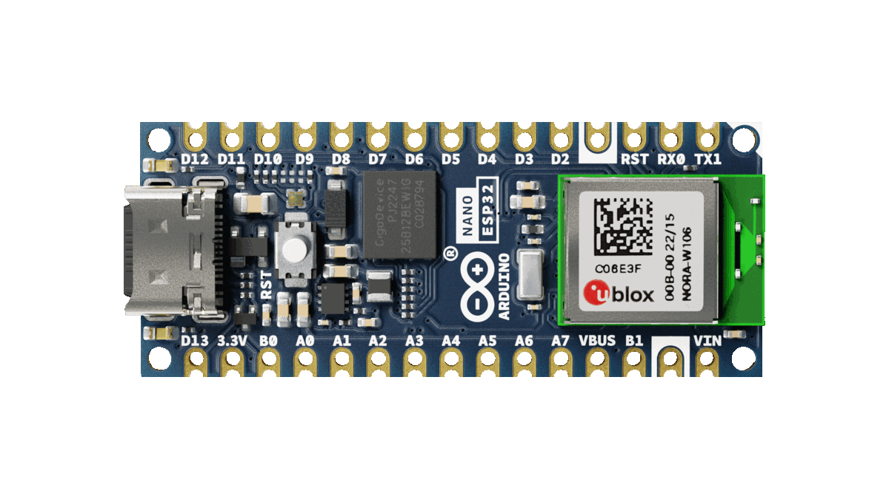
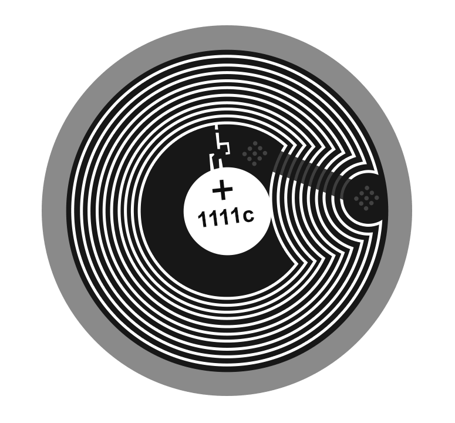
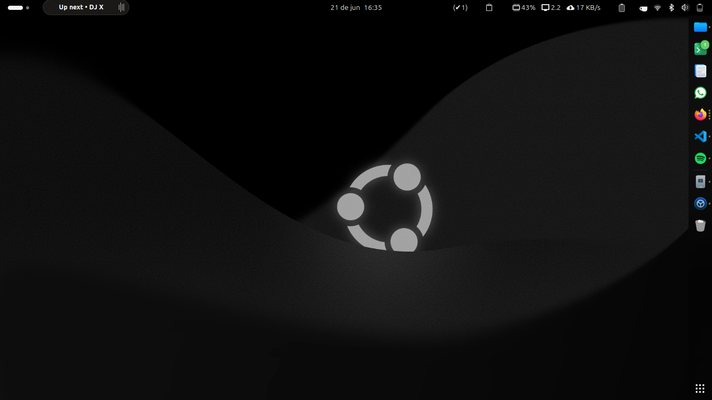

Hardware hacking
Flipper Zero
Un dispositivo del tamaño de tu mano que habla con el mundo inalámbrico que te rodea — radio, NFC, infrarrojo y USB.
Conectando el mundo digital con el real.
Sitios web, sistemas y herramientas digitales construidas para clientes reales — desde emprendimientos hasta sistemas en producción.
Sitios 100% personalizados, fuera de lo común, llamativos y creativos — con identidad propia y código a la medida de tu proyecto.
"De la idea a la pantalla — con identidad propia y código a la medida."
Apps propias que uso en el día a día — hidratación, fitness, y lo que se me ocurra.
El éxito es del más astuto.
Proyectos random, propuestas sin sentido, curiosidades y brainrot.
De la idea al prototipo físico.


Un chip NFC no tiene batería, no necesita app, no ocupa espacio. Acercas el teléfono y pasa algo: abre tu sitio web, tu Instagram, tu menú, tu carta de vinos, tu portafolio, tu WhatsApp.
Compatible con NTAG213, NTAG215, NTAG216 — los mismos que usamos en el Flipper Zero. Yo te genero el archivo, tú lo grabas con cualquier app NFC.
Un dispositivo del tamaño de tu mano que habla con el mundo inalámbrico que te rodea — radio, NFC, infrarrojo y USB.
Todas mis apps corren 100% en tu navegador — sin servidores, sin bases de datos externas, sin rastreo. Aquí tienes dos herramientas que lo demuestran, funcionando localmente en este mismo momento.
Generado localmente — nunca sale de tu dispositivo.
┌──(root㉿kali)-[~/tools/passwd-gen]
└─# generate --interactive
Análisis de patrones — sin depender de servidores externos.
URL Safety Checker — análisis de patrones locales
Basado en patrones locales — no sustituye Google Safe Browsing.
No solo páginas estáticas — esto es lo que se puede lograr con código hecho a la medida.
Motor minimax nivel 4 con poda alfa-beta, tablas posicionales y respuesta en <200ms. Completamente en el navegador, sin servidor.
Mis esenciales de día a día para proyectos.

$ cat dato-curioso.md
# Todo corre sobre Ubuntu
Desde la laptop hasta la Nintendo Switch — todo en Linux. Algunas extensiones GNOME que uso para volver locas las pantallas (y a veces literalmente quemarlas un poco):
¿Por qué Linux y no Windows para esto? Porque el kernel es abierto: puedes cambiarlo. Mainline, Liquorix, Xanmod, Zen — cada uno prioriza algo distinto (latencia, throughput, eficiencia), y tú eliges. En Windows el kernel es una caja cerrada; en Linux es una pieza más que puedes intercambiar según lo que necesites.
$ _